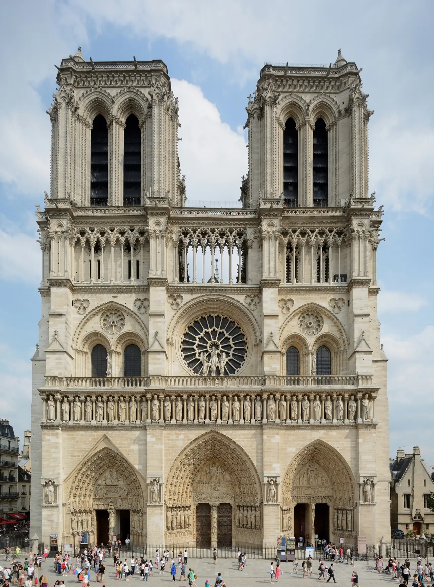

Notre-Dame de Paris

| 지역 | Paris |
|---|---|
| 등급 | Must |
| 언제 | 일정에 배정된 날을 시간표에서 찾지 못했다 |
| 상세 | 챕터 본문에서 보기 |
| 지도 | Paris 실행지도 · 핀 이름 Notre-Dame |
참고
오프라인입니다. 위키백과와 지도 링크는 연결되면 다시 동작합니다.
Day 29 (9/26 토)
무엇인가 — 5년 만에 돌아왔다
2019년 4월 화재 이후 5년의 복원을 거쳐 2024년 12월 7–8일에 재개관했다. 2026년 현재 완전히 열려 있고 무료이며 매일 방문객을 맞는다.
재개관 이후 6개월 만에 600만 명이 넘게 다녀갔고 연간 1,200만 명이 예상된다.
1163년부터 15세기에 걸쳐 시테섬에 지어졌고, 860년이 넘는 역사를 지켜봤다.
⚠ 무료지만 예약 체계가 있다
모든 방문자에게 입장이 무료다. 티켓을 팔지 않는다. 입장은 notredamedeparis.fr의 무료 온라인 예약 시스템으로 관리된다.
시간 지정 예약은 선택이지만, 성수기(4–10월)에는 1–3시간 대기를 피하려면 강력히 권장된다.
예약 없이 오는 사람은 우선순위가 가장 낮고 입장이 보장되지 않는다.
하루 35,000명 이상을 관리하기 위한 체계다. 예약 슬롯은 순차적으로 풀리며, 보통 방문 희망일 몇 시간 전에서 이틀 전 사이에 열린다.
⚠ 몇 달 전에 예약할 수 없다. 슬롯이 며칠 전에야 열린다. 파리 도착 후 매일 확인해야 한다. 티켓을 판다는 업체는 전부 가짜다. 유일한 티켓은 공식 사이트의 무료 예약뿐이다.
언제 가는가
2026년 최적 시간은 오전 9:30 이전(개장 후 첫 시간이 가장 한산하다), 평일 오후 4시 이후, 또는 목요일 저녁 7시 이후(22시까지) 다. 가장 붐비는 시간은 매일 10–16시이고 주말과 공휴일에 정점이다.
Day 29는 토요일이다. 주말은 가장 붐비는 날이다.
대응 — 주말 개장이 8:15이다. 개장 직후에 간다. 또는 목요일 저녁으로 옮긴다 — Day 33(9/30 목)이나 Day 34(10/1 목)에 저녁 시간이 있다.
운영
| 항목 | 값 |
|---|---|
| 월–금 | 7:50–19:00 · 목요일만 22:00까지 |
| 토·일 | 8:15–19:30 |
| 마지막 입장 | 폐관 30분 전 |
| 요금 | 무료 |
| 종탑 | 2025년 9월 재개방 · €16 · 온라인 사전 예약 필수 출발 전 재확인 |
| 종탑 시간 | 9월 24일–10월 31일 9:00–23:00, 마감 1시간 전 입장 |
| 고고학 지하실 | €9 출발 전 재확인 |
| 보물관 | 평일 9:30–18:00(목 21:00까지) · 토 9:30–18:00 · 일 13:00–17:00 · 유료 |
무료로 얻을 수 있는 것 두 가지
일요일 16시 대오르간 연주 일요일 16:00에 무료 대오르간 연주가 있다. 모든 방문객에게 열려 있다. Day 30(9/27 일)과 Day 37(10/4 일)이 일요일이다. 특히 Day 37은 의도적으로 비운 날이다. 계획 없이 이 연주를 들으러 가는 것이 그 날의 성격에 정확히 맞는다.
화요일 저녁 성음악 연주회 2025–26 시즌, 매주 화요일 20:30에 성음악 연주회가 있다(유료). Day 32(9/29 화)와 Day 39(10/6 화)가 화요일이다.
볼 것
가시 면류관은 1239년 루이 9세가 파리로 가져온 것으로, 서방 기독교 세계에서 가장 귀한 유물이다. 2019년 화재에서 소방 사제의 영웅적 개입 덕분에 살아남았다.
2026년에도 복원이 이어져 새 스테인드글라스가 설치되며 이 재건 사업이 완성된다.
복원 중인 부분이 있다는 것 고고학 지하실과 외부 전체 복원 작업은 2026년 이후까지 계속되지만 관람에는 영향이 없다. 완성된 상태를 보는 것이 아니다. 진행 중인 재건의 한 시점을 보는 것이다. 그 자체가 이 시기 방문의 의미다.